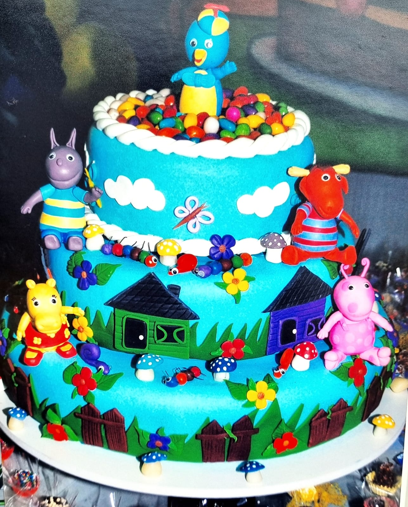
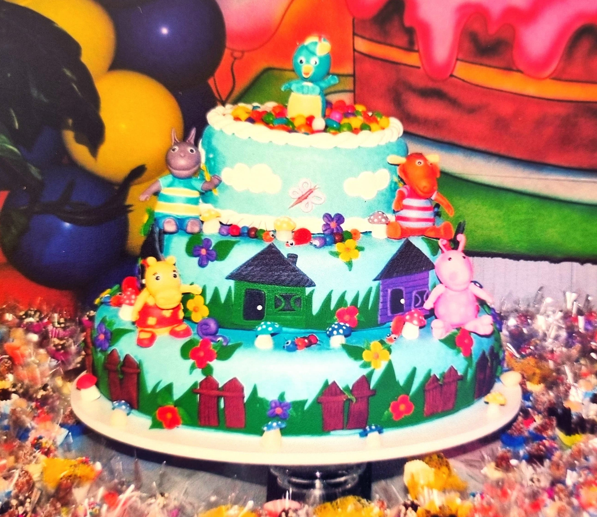
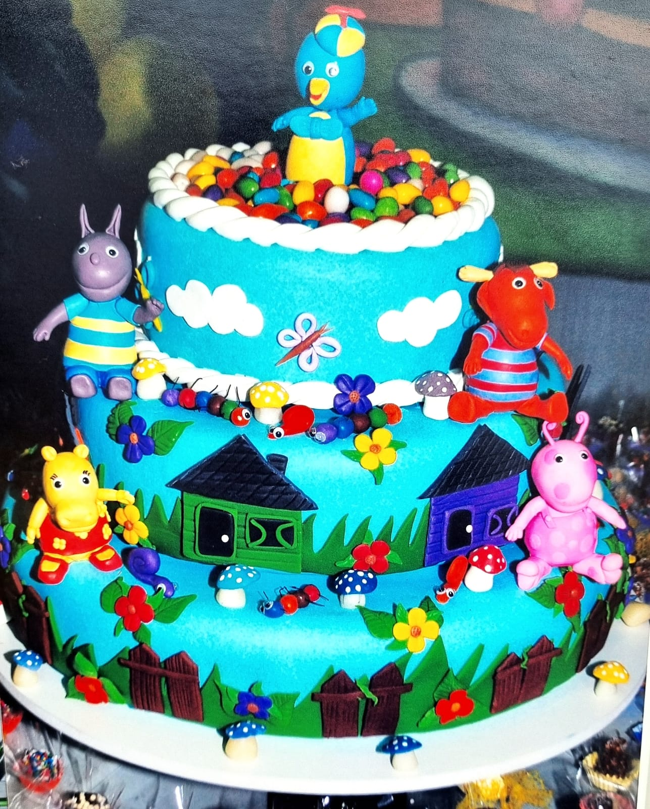
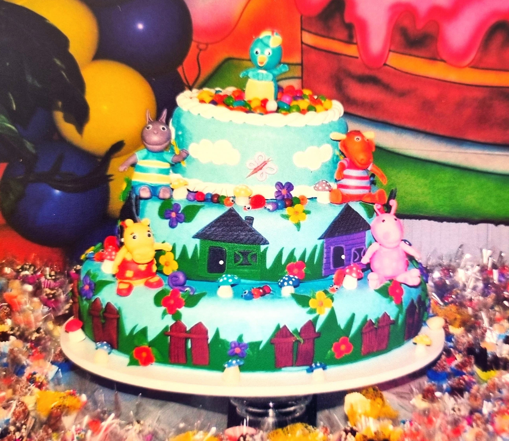

- Edilaine Valença Macedo (Edi Festeira)
Gostaria de compartilhar com vocês um pouquinho da nossa história. Tudo começou por um simples desejo de fazer um bolo para aniversário de um ano do meu filho. Na pesquisa e na tentativa de alcançar um valor mais em conta, eu decidi enfrentar o desafio de fazer o próprio bolo. Então, busquei na internet todos os materiais necessários para a execução do meu plano. Jamais imaginaria que dali sairia o meu grande sonho. Compramos o material e ali começava o desafio de tentar se espelhar nas imagens e vídeos transmitidos pelo Google através do YouTube. Confesso que ajudou muito. Todas as etapas do Google foram sendo executadas com a maior atenção possível. E daí consegui fazer o bolo do meu filho. Como sou uma pessoa muito desafiadora, comecei a fazer ele com três andares. Poderia então não acreditar que poderia sair algo. Mas como sou uma mulher muito determinada, acreditei que poderia sim. Além de conseguir realizá-lo, fazer além das minhas possibilidades. Então, está aí o resultado para vocês:
 



Na festa, os convidados ficaram surpresos como o bolo ficou extremamente parecido com o que eu acreditava que faria. E a partir dali surgiu o desejo de cada vez mais me dedicar e aprender um pouco mais sobre a arte do biscuit. Dali então surgiu o nome edi Biscuit. Uma pequena empresa voltada para aluguéis de bolo fake e lembrancinhas para tema infantil. E depois daquele dia, as portas começaram a se abrir. E não parei por aí. Além dos bolos e lembrancinhas feitas com todo carinho e dedicação, comecei a me apaixonar por o mundo da decoração. E me encantei com os detalhes e preciosidades que o mundo da festa esconde.
Então, estou aqui nesses exatos 15 anos buscando a cada dia conhecimento e desafios, sempre acreditando que podemos todas as coisas. A fé precisa estar sempre dentro de nós. Não importa as dificuldades que se levantam sobre as nossas vidas. O importante é acreditarmos onde queremos chegar. E a minha meta é sempre buscar o melhor. Não somente para mim, mas para os meus clientes. O meu sonho hoje é que a cada dia eu possa crescer em conhecimento e continuar realizando sonhos. Pois esse é o nosso objetivo. Como falei para vocês, tudo começou com a Edi Biscuit. E com o passar do tempo, me encantei ainda mais pelo mundo da decoração. Hoje não trabalho mais. Mas nunca esquecerei que o Biscuit foi o meu primeiro passo, que me fez chegar até aqui. Hoje me dedico totalmente ao mundo da decoração. E me apaixono a cada dia para tornar sonhos em realidade.
- Edilaine Valença Macedo (Edi Festeira)